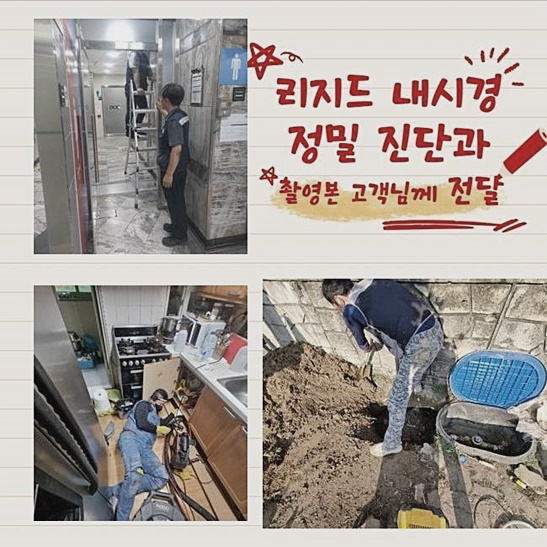
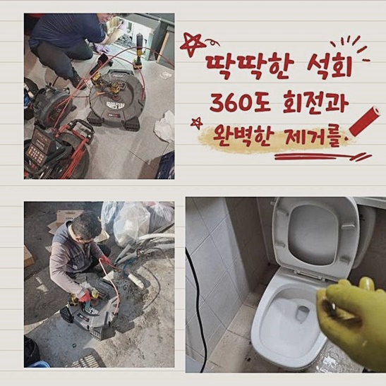
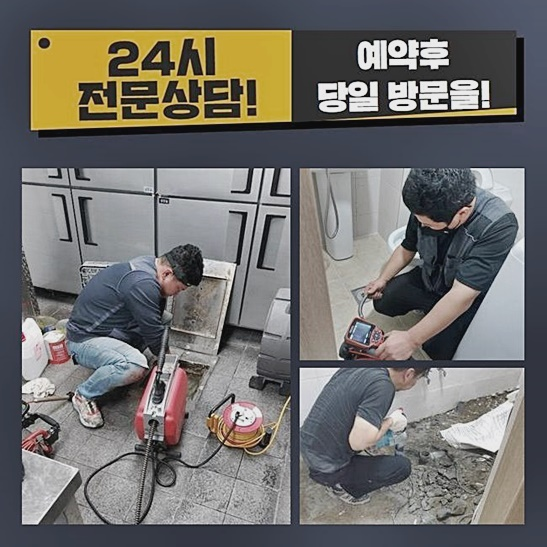
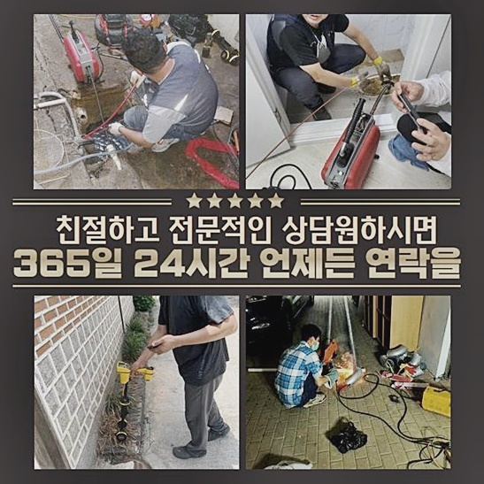
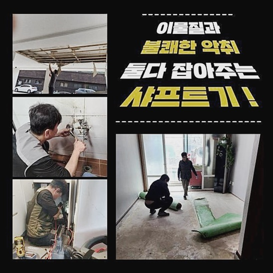
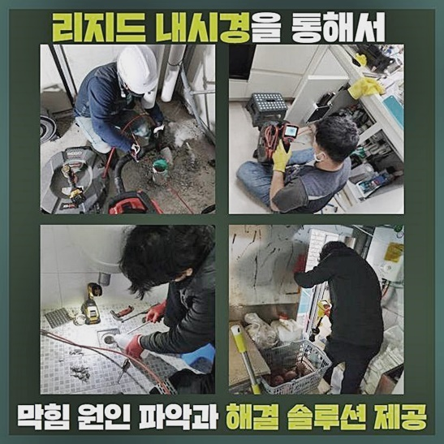
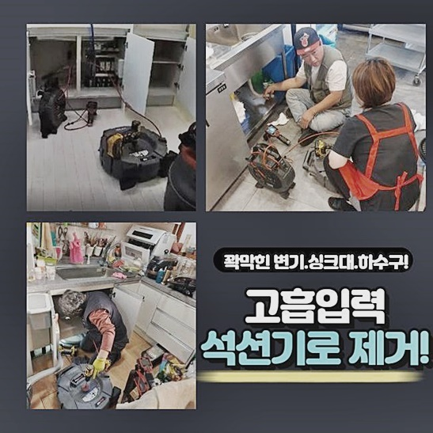

🏠 구리시 갈매동화장실하수구역류 아천동 하수구뚫어주는곳 누수공사
용인시 처인구 배관막힘 전문 시공 후기

📋 작업 개요
- 위치: 용인시 처인구, 수원시 영통구, 화성시 동탄
- 서비스 유형: 배관막힘, 하수구청소, 누수수리, 고압세척, 내시경점검
- 작업 일시:
- 업체명: 하수구수사대 (010-5615-2118)
🔍 문제 상황
구리시 갈매동화장실하수구역류 아천동 하수구뚫어주는곳 누수공사
인사올리겠습니다! 배수관을 고쳐내는 설비업체에요!
배수시설이 예기치않게 막히면 생활양식들을 이어가줌에 피해들이 발생되게됩니다
지금부터는 며칠전에 달려갔던 막히게된 장소의 예시를 보고 막힘증세들을 말씀드리고자하니 읽으신 뒤에는 유용하게 쓰일거라 생각해요
내방드린데는 하수관로가 정체된 곳이였어요
세탁시설과 각 가구들이 들어서있던 복합건물이였죠
집 안의 배수구가 막혀버리게되어 당장 달려갔어요
지금 정독하시던 여러분들께서 고민들을 마주하여 해결책이 떠오르지않는다면 전문으로 이를 해결하는 전문가에게 연락하여 해결해볼것을 권하는 바입니다
하수관을 수리하는것을 보면 고객님에게 증상을 잠재우고 명확한 해결을 할 것을 말씀드리며 신속히 달려갔죠
고객분은 급박하게 출동을 요청하셔서 신속히 찾아뵈었어요
빠른해결이 요구되면 저희의경우 내방하여 해결을 도와드려요!
이번에 방문했었던 막히게된 장소의 현장의 경우엔 입구에 영업 중인 빨래를 하는 곳이였기에 이곳도 배수장애가 생겨나지는 않았는지 볼 필요가 있었어요
세탁영업시설은 하수관로가 막히면 영업을 할수없으므로 막힘증상에 피해들이 상상을 초월하죠

🔎 원인 분석
💡 전문가 진단: 정밀 진단 장비를 사용하여 슬러지의 고착 여부를 판명하고 타격/세척 작업을 실시했습니다.
금액적 측면을 줄이는게 가능하고 운영하는데에있어서 불미스러운 일이 없도록 선제적으로 움직여보았죠
계신 곳에 도착 후 배수관을 들여다보았더니 천장부분에 하수도가 설치된 내구성이였죠
증상의 시작점이 어디에 위치한건지 파악해보고 배관의 세척과정을 통해 막혀버린 지점을 깔끔히 작업해야했습니다
현장으로 도착한 단계에서는 집 안쪽에서는 배수시설이 막힌 상태가였어요
배수관 관련 용품을 써서 자가적으로 이 상황을 타개하고자 했지만 호전이 없으셨대요
따뜻한 물까지 흘려보내도 의도치않게 역류하는바람에 상태가 심각하다고 전달하셨습니다
이제부턴 외측에서 깔끔히 청소과정을 이어가고 내부의 하수라인으로 연결된 부위의 하수구 이물제거를 이어갔죠
세탁시설에는 내부 하수라인과 라인을 함께하여 생활이물이나 빨래과정에서 탈락된 오염물들이 쌓여버리면 고민들을 발생케할 수 있죠
위와같은 이유때문에 증상들이 발생되지 못하게 이물제거를 시작시도했습니다
샤프트기기로 구석구석 스케일링을 실시해보았어요
영업이 주된 목적인 세탁영업시설은 증상들이 발현되었을 경우 불편이 상당하므로 앞서서 진단을 진행해주어야 되겠습니다
까닭이 명확하지않은 채로 무턱대고 뚫음을 시도하면 더 큰 문제들이 생겨날 지 모릅니다
가정의의 안으로 이동하여 관찰해보니 욕실쪽에서 물들을 틀면 주방쪽과 욕실 모두 역류하고있었고 막혀버린 상태였는데요

🔧 작업 과정
역류가 발생되는건 하수관의 배수라인이 좁혀져서 수도량을 감당못해서 역류들이 야기되거나 막힌 탓에 현상입니다
천정부에 하수관에 결함이 있는 까닭에 개선을 실시할 것을 권했습니다
보통 통로들이 증상의 전조를 떠올려보면 구조들의 결함이 있을 수 있죠
그저 볼 때는 문제가 없는것처럼 보이겠으나 관찰해보면 내구성이 저하되어 있거나 구배가 형성되지 못해서 원인이 발생될 가능성이 커집니다
오늘 막힘증상의 장소에서는 청소작업 샤프트기기 사용을하고자 우선 비닐들을 기반으로 해 보양작업까지 마치고 작업을 개시했죠
의외로 간소한 현장의 경우 샤프트장치를 사용하여 시정이 가능한데요
반대로 구경이 넓거나 안쪽에 잔해물들이 존재한다던가 다중으로 뻗어있다던가하는 특이사항이 있다면 샤프트기만 가지고는 작업이 불가합니다
해당 상황에선 고압의 물줄기는 쏘는 과정을 밟아나가야하죠
샤프트장비의 경우 노커체인이 돌아가는것을 통하여 고착된 이물들도 사라지게하는 기능을 합니다
타공위치를 확인하고 홀을 파내어 구멍으로 샤프트를 써서 잔해들을 분쇄했습니다
작업을 진행하니 옷감의 부산물처럼 보이는 이물이 배출되었고 세탁기를 돌리고 배출되지 못한 이물들도 함께 배출되었죠
내시경장치로 주시해야하는 특성과 연관하여 설명하고자 하는데요
내시경기기의 중요성들은 반복적으로 강조드려 어렵지않게 대다수의 고객분들이 인지하고 있는 경우가 많아요
매립된 배관을 가시적으로 관찰하고자한다면 내시경기기를 이용해 파악하는 것입니다
이런저런 이유로 통수를 막아서며 내시경으로서 구조의 막힘을 파악하고 다채로운 해결법이 실천되야하는건지 파악해볼 수 있죠
내시경기기를 가지고 구석구석 주시하면서 이물제거를 수행했습니다
내외부를 번갈아가며 작업들을 실시하여 위생적으로 복구시켜드렸습니다
내부의 화장실과 씽크대에도 꽉차게 물을 담고 일시에 내려보니 전과달리 흘러 내려갔어요
고객분도 배관으로 빠지는것을 본 뒤 한시름 놓았다고 하셨어요
불편을 자아내던 하수라인을 선제적으로 청소해주고 뒤탈없이 종료할 수 있었어요


✅ 작업 완료
혹여 이물이 많아 배수구 어딘가 막혀버린 경우라면 내부에서 악영향을 미쳐 물들이 새어나오는 증세가 발생될 확률이 높고 물이 새는 증상이 생긴다면 타 세대에 피해를 끼치는 일이 일어나므로 관리적측면을 간과하지 말아주세요!
거리에 상관없이 1시간안으로 찾아뵈는것이 이뤄지고 있고 의뢰인분에게 작업결과물을 보여드리고 고객분께선 걱정없게끔 시작하고 있으니 안심하시고 연락하시면 재빨리 고민들을 해결해드리고 있으니 걱정은 내려놓으시고 연락주세요
혹시라도 질의할것이 있으시면 문의하시어 질문해도 괜찮으니 전화하실때에는 친절하게 고객분들을 도울게요!
막혀버린 곳의 현장에서의 작업이 간절할 경우 염려는 내려두시고 저희에게 전화해주세요
앞으로있을 하수 시스템 오류! 저희전문가와 시정하는것은 어떠신가요?
탁월한 해결력으로 고객분들을 맞이해드려요!




⚠️ 하수구 배관 막힘 예방 및 관리 가이드
- ✅ 머리카락, 비닐, 물티슈 등 물에 분해되지 않는 이물질은 절대 흘려보내지 마세요.
- ✅ 기름기 많은 식기는 설거지 전 키친타올로 먼저 기름때를 닦아내세요.
- ✅ 주기적으로 배수구에 뜨거운 물을 가득 부어주어 유지방 고착을 방지하세요.
- ✅ 작업 후 1년 이내 재발 시 무상 A/S 보증 서비스를 제공합니다.
💡 핵심 정리
- 확실한 장비 작업(내시경 점검 및 샤프트 스케일링)으로 원인을 뿌리 뽑습니다.
- 작업 후 1년 이내에 동일한 부위 재발 시 100% 무상 A/S 서비스를 보장합니다.
- 서울 · 경기 · 인천 전 지역에 24시간 언제든 긴급 출동할 수 있도록 항시 대기 중입니다.
❓ 자주 묻는 질문 (FAQ)
🚨 용인시 처인구 배관막힘 문제로 고민이신가요?
정확한 원인 진단과 확실한 시공으로 재발 없는 해결을 약속드립니다.
24시간 긴급 출동 | 서울 · 경기 · 인천 전지역 | 1년 내 재발 시 무상 A/S